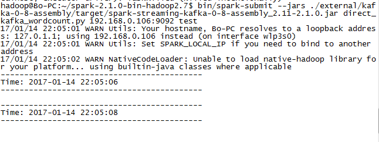
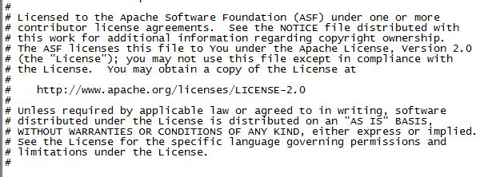
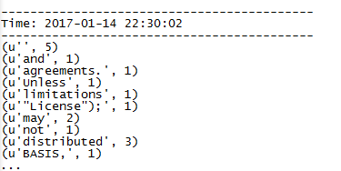

公司是想通过类似MySQL->Yelp->Kafka->Spark Streaming->OpenTSDB的结构搭一套框架,然后一步一步来吧
每个部分单独实现接口肯定是没问题的,无非就是Java/Python/WebAPI或者其他接口封装一下,问题是怎么用最简单的方法把这一套串起来
啃文档啃文档啃文档…
linux/java/maven/python/english每一项都是弱项,结果对文档的理解进度很慢…
花了三四天才用官方的example把kafka的数据直接接入了spark streaming
最近看的东西也是太多太散,本身自己其实只是根据文档做了个测试,命令都还记不住…整理一下吧
下载安装
官方网站下载最新的Pre-build版本，解压就可以直接跑了
下载页面
源代码编译
这就不得不看一下maven的问题了
maven根据配置自动下依赖包的功能是很方便，然而GFW面前都是浮云，百度之后找到了淘宝镜像站
修改settings.xml文件中的镜像配置即可
1 | <mirrors> |
编译命令
网上搜下来有两种，第一种是./build/mvn
1 | build/mvn -Pyarn -Phadoop-2.7 -Dhadoop.version=2.7.0 -DskipTests clean package |
然后一种是用脚本把编译后的项目打包出来
第一种做法看不懂怎么用,还是太多东西不懂,先用起来……所以这里采用第二种
1 | ./make-distribution.sh --tgz --name 2.7.0 -Pyarn -Phadoop-2.7 -Phive |
先编了一次,提示有错误,生成文件spark-[WARNING] The requested profile "hive" could not be activated because it does not exist.-bin-2.7.0.tgz,大概是hive没有安装?参数去掉再编一次,生成成功
然后根据官方的LinkSection和自己的需要添加dependency,编译完成之后相关的依赖包也会打在生成的文件里面.
因为公司是要把kafka的数据直接接到spark streaming里面,这里我添加了kafka的依赖,其实后来想想自己到Maven repository上面手动搜包下载就好了…在这里浪费了很长时间
数据接入例子
简单说一下我这次是怎么做的
Kafka
启动Kafka服务
1 | nohup bin/kafka-server-start.sh config/server.properties & |
新建名为test的topic
1 | bin/kafka-topics.sh --create --zookeeper localhost:2181 --replication-factor 1 --partitions 1 --topic test |
启动kafka producer
1 | bin/kafka-console-producer.sh --broker-t localhost:9092 --topic test |
到这里kafka这边基本都好了
启动Spark Streaming程序
首先把需要用到的kafka包拷到Spark的路径下,然后找到官方的direct_kafka_wordcount.py文件,或者直接自己写一个
1 | # |
然后就是执行下列命令
1 | bin/spark-submit --jars ./external/kafka-0-8-assembly/target/spark-streaming-kafka-0-8-assembly_2.11-2.1.0.jar direct_kafka_wordcount.py 192.168.0.106:9092 test |
这句很长,要确保引用的jar包路径正确无误,然后就是python代码文件路径正确,命令结构大概是spark-submit --jars jarSource codeSource host:port topic这样
跑起来没有自动退出,就说明是命令正确可以被执行了,但是这里默认会输出大量的INFO日志,先修改一下日志的配置为WARN
切换到conf目录
1 | cp log4j.properties.template log4j.properties |
重新执行,应该是像这样

程序这就算是跑起来了,在生产者里面输入的数据会进入spark streaming进行处理,显示结果大概是这样
输入

输出
